Part 1. Setting up the data
1. Navigate to Tier 7 in the Tank Tier list, Right click R59_A44 > Select Load this
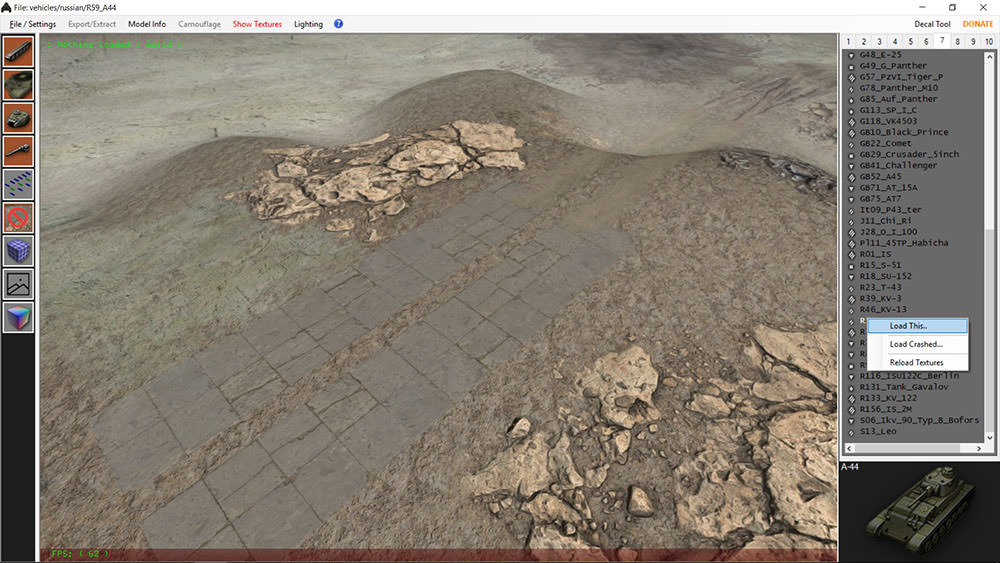
2. Pop up will ask which Turret and Gun you want to load.
a.
We will use gun_08 (top gun) and Turret_02 (Top Turret)
b. IMPORTANT! Make note the turret and gun ID. IT WILL BE NEEDED LATER!
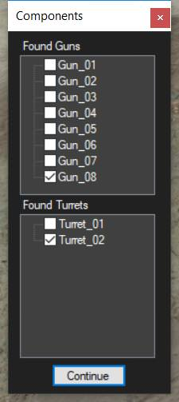
3. Select Export / Extract > Remove Tank from Res_Mods > select Yes
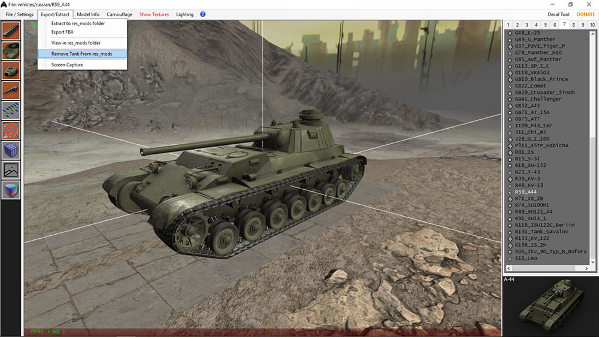
A. This will ONLY Delete that tank from the Res_Mods folder.
NOTHING else will be deleted from the Res_Mod Folder Directory
B.
If nothing is in the current folder just ok the pop up and continue.
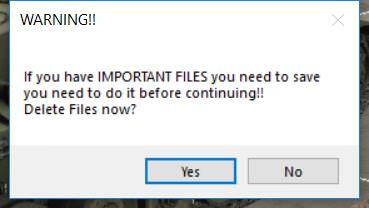
4. Select Export / Extract > Select Extract to Res_mods folder.
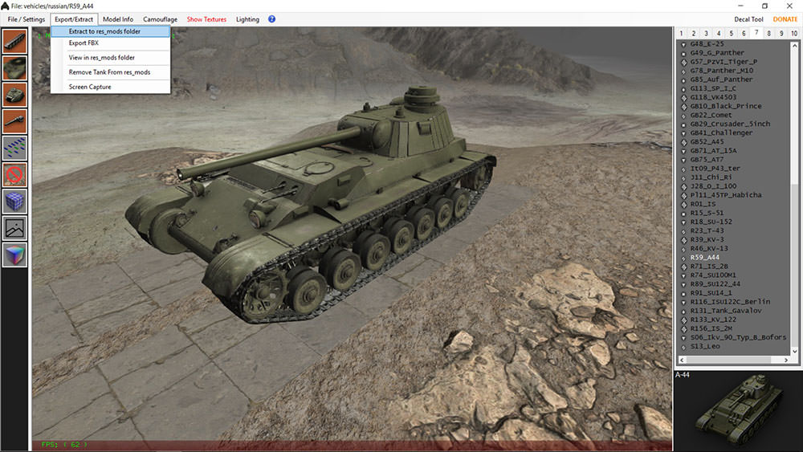
5. Select ONLY Chassis and Hull Data, and All available LOD
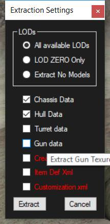
6. Select Export / Extract > View in res_mod folder a.
Minimize this window. DO NOT CLOSE, will be needed later.
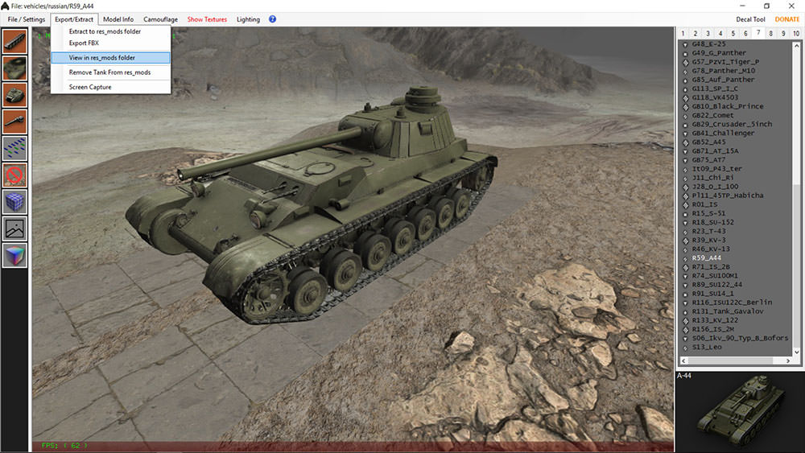
Under File / Settings you can select remove models to clear the tank screen at this point.
8. Right click F68_AMX_Chasseur_de_Char_46 > Load This
9. Pop up will ask again which gun and turret
A.
This is a premium tank so therefore you will see gun_01, Turret_01
B. Again MAKE NOTE of THIS! Not as important but good practice.
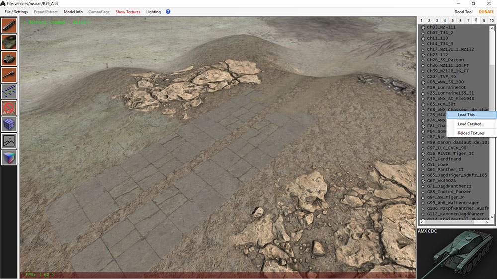
10. Select Export / Extract > Remove Tank from Res_Mods > select Yes
A. This will ONLY Delete that tank from the Res_Mods folder, NOTHING else will be deleted from the Res_Mod Folder Directory
B. If nothing is in the current folder just ok / cancel the pop up and continue.
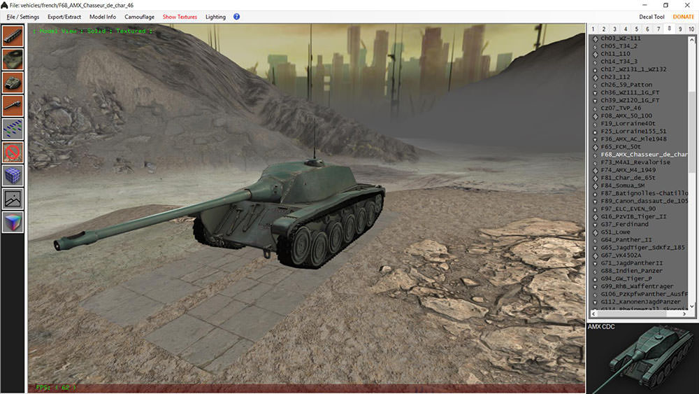
11. Select Export / Extract > Select Extract to Res_mods folder.
12. Select ONLY GUN and TURRET Data, and All available LOD's.
13. Select Export / Extract > View in res_mod folder
Minimize this window. DO NOT CLOSE, it will be needed later.
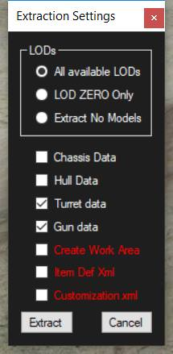
PART 2. The manual Editing
If you have followed the above guide correctly you should have 2 Res_mod folder locations opened.
The A44 and the AMX CDC, and Tank Exporter.
1. Minimize Tank Exporter at this time.
2. Go to the R59 AMX CDC window
3. Select all Files and Folders in this window (Keyboard Shortcut: Control+A)
4. Right click on any highlighted file / folder > Select Copy (keyboard Shortcut: Control+C)
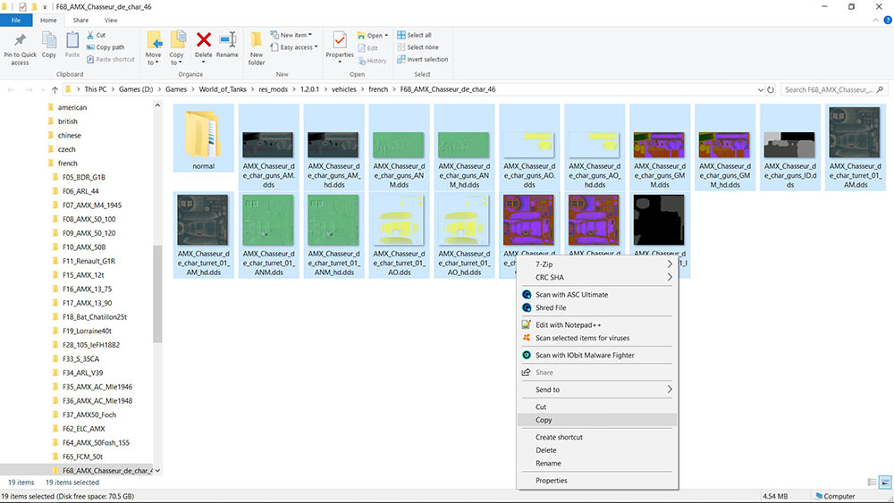
5. Swap to the opened A44 window directory (Keyboard Shortcut: Alt+Tab)
6. Click anywhere inside this window, NOT on any file / folder (White space area)
7. Right Click > Select Paste (Keyboard Shortcut: Control+V)
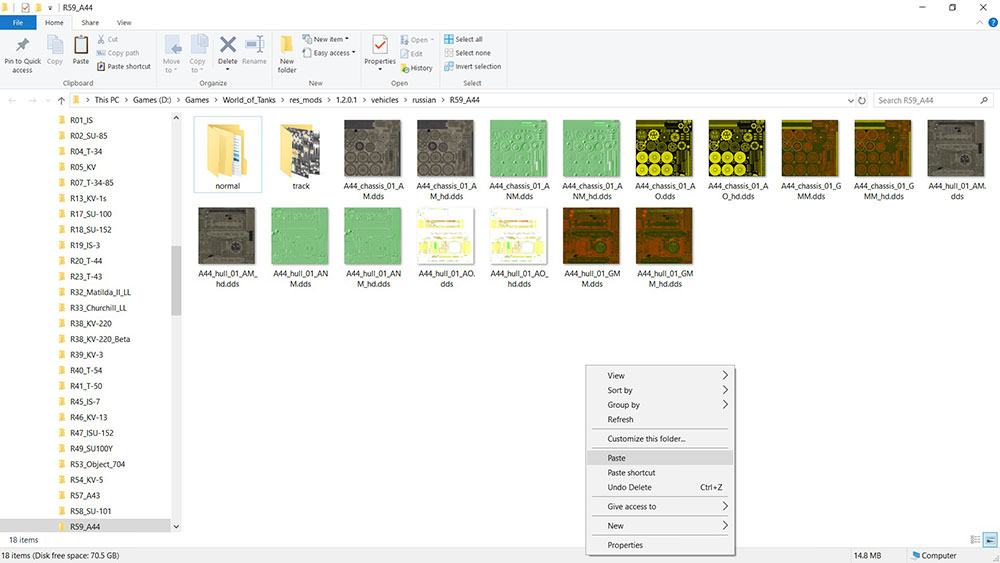
The A44 Tank Directory Folder should now look like THIS image.
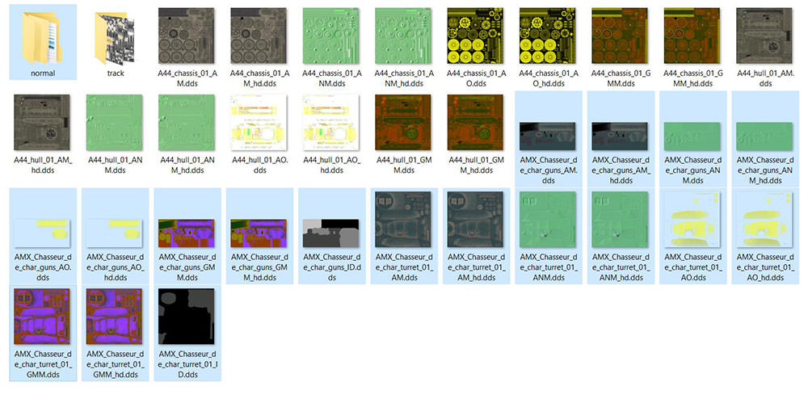
8. Open Normal Folder > Open Lod0 Folder
9. In Step 2 Part 1 of this guide you were given the name of the A44's Gun ID: (GUN-08) and Turret ID (Turret_02).
This is why it was VERY important to take note in that process!
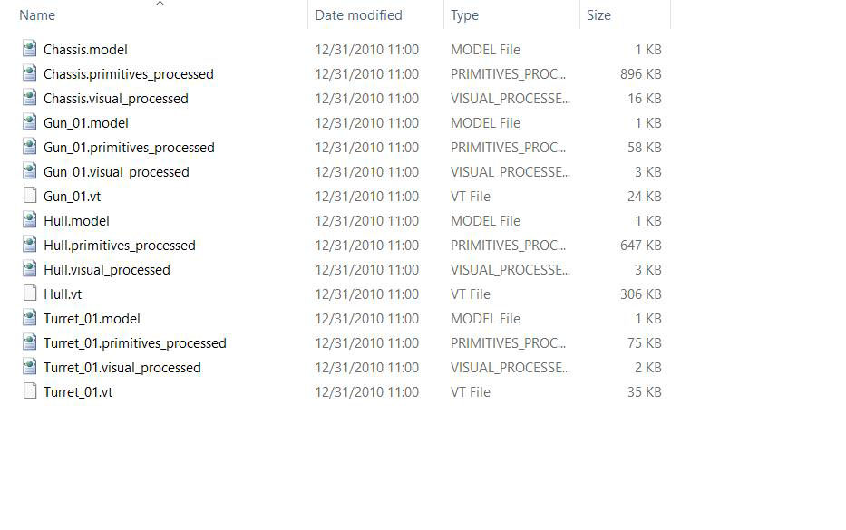
10. Rename all of the current Gun ID's: Gun_01 to Gun_08
BE Careful to NOT change the file type!
11. Rename all of the current Turret ID's: Turret_01 to Turret_02
12. Repeat Step 10 and 11 for all remaining Lod Folders (Lod1 – Lod4)
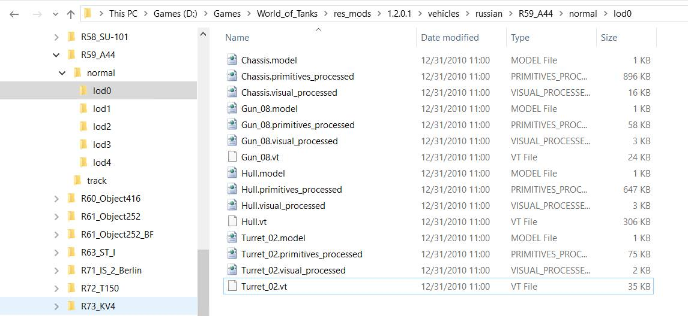
13. Use Alt+Tab back to Tank Exporter
14. Navigate Tank List 7 to the A44 (R59_A44)
15. Right Click and Select Load This
16. If all of the above steps were followed correctly your Tank should now Look like the Following.
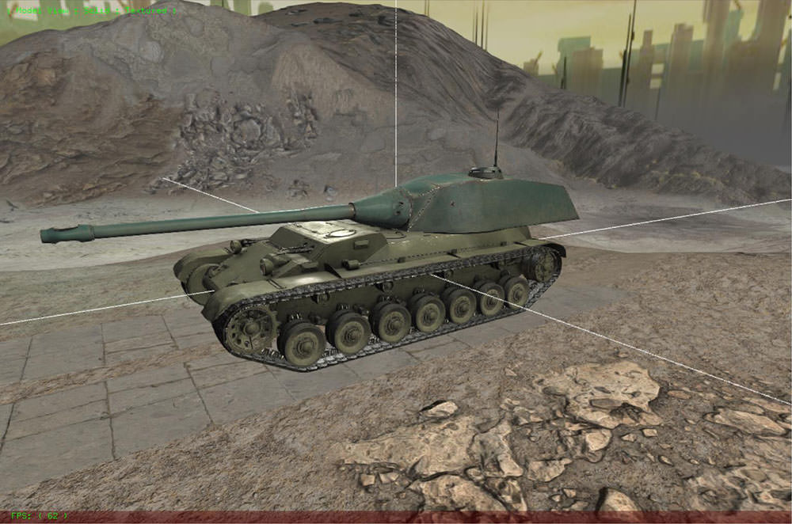
17. Grab a Beer and enjoy your tank!